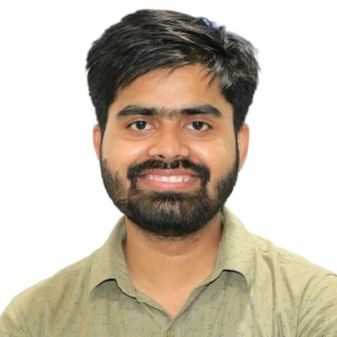

Experimental physicist working on spin–orbit torque in van der Waals magnetic heterostructures.
Postdoctoral Researcher, Quantum Device Physics Group
Department of Microtechnology and Nanoscience (MC2), Chalmers University of Technology, Gothenburg, Sweden

What I work on
I build and measure spintronic devices from atomically thin magnets. My work asks how electrical current can switch magnetization efficiently, at room temperature and without an external magnetic field.
At Chalmers I study spin–orbit torque in 2D van der Waals magnetic heterostructures. I fabricate the devices myself in the cleanroom, from 100 mm wafer processing to electron-beam lithography and plasma etching, and characterise them with DC and harmonic Hall measurements, ferromagnetic resonance, and low-temperature magnetotransport.
During my PhD at IIT Delhi I developed a sputtering route for Te-based topological and 2D magnetic films (Bi2Te3, Sb2Te3, PdTe2, CrTe2), reaching structural and transport quality comparable to MBE-grown films, and studied spin pumping and spin-to-charge conversion in topological insulator/ferromagnet stacks. The long-term goal is energy-efficient spintronic and magnetoelectric devices for future information technology.
Room-temperature, field-free switching of an out-of-plane van der Waals ferromagnet driven by unconventional spin–orbit torque, with the torque tunable in an all-vdW device stack.
2013 – present
Thesis: Magnetotransport and Spin Dynamics Investigations on Te-based Topological Materials and Sputtered Heterostructures · awarded Distinction
Thesis: Synthesis and characterization of one-dimensional MoS2 nanostructures by chemical vapour deposition (Prof. Mukesh Kumar)
Cleanroom to cryostat
Selected, newest first
Recognition and service
Collaborations welcome
I am happy to talk about collaborations, device fabrication, or spintronics research and industry roles.